faltung deep is the deep house twin of faltung: the same synthesis and processing engines, retuned and re-preset for warm, swung, late-night house — round kicks, wooden rims, soft claps, shakers and congas, chord stabs and sub bass.
It has seventeen plug-ins: the drum machine kt1 kit, the slicer kt2 loop, eight single drum modules, six effects and sb1 stabs, a synth that plays a whole chord from one key. faltung's mastering bus and Partials are not part of it — use them from faltung itself. Both suites install side by side; every faltung deep plug-in is called faltung deep ….
The look follows record sleeves: a mirrored tree in one duotone per plug-in, and the controls laid out like the back of a sleeve — title top left, a "Side A / Side B" track list, a catalogue number, small credits along the right edge.
| id | name | what it is |
|---|---|---|
| kt1 | kit | deep house drum machine, eight voices + sequencer |
| kt2 | loop | loop slicer for breaks and chopped grooves |
| bd1 | kick | round, warm deep house kicks |
| sd2 | snare | soft snares and brushes |
| rm3 | rim | wooden rims and sticks |
| hh4 | hats | hats and shakers |
| cp6 | clap | soft claps and snaps |
| pc7 | perc | congas, bongos, bells |
| cl8 | dust | vinyl dust, ticks and pops |
| tm9 | tom | deep toms |
| mc3 | micro | micro-sampling for chopped textures |
| dl4 | dub | tape echo for chords and percussion |
| rv5 | room | warm rooms and plates |
| sw6 | swing | the swing of a drum machine, on any audio |
| fl7 | filter | dj isolator and warm sweep |
| gl8 | glue | bus compressor and tape |
| sb1 | stabs | chord stabs, organs and sub bass |
Each plug-in comes as VST3, Audio Unit and VST2 (VST3, LV2 and VST2 on Linux) and as a standalone app.
| format | where (macOS) |
|---|---|
| VST3 | ~/Library/Audio/Plug-Ins/VST3/faltung deep kt1.vst3 … |
| Audio Unit | ~/Library/Audio/Plug-Ins/Components/faltung deep kt1.component … |
| VST2 | ~/Library/Audio/Plug-Ins/VST/faltung deep kt1.vst … |
| apps | /Applications/faltung deep/ |
With Homebrew: brew install --cask femifleming/tap/faltung-deep. On Windows copy the .vst3 folders to
C:\Program Files\Common Files\VST3; on Linux to ~/.vst3 (LV2: ~/.lv2). In Ableton Live, rescan plug-ins; they appear under
FreakiePie. Every plug-in opens on its first deep house preset.
| control | how |
|---|---|
| slider | a condensed label, a hairline and a white tick. Drag sideways or up/down; shift for fine moves; double-click resets; the wheel steps. |
| choice | click for a menu, drag up/down to step. |
| switch | the small square: filled = on. |
| presets | < and > step, click the name for the list; also in the host's program menu. |
| size | drag the bottom-right corner (half to double size). |
The tree is alive. It sways in a slow wind — every branch at its own pace, so it never repeats — and the sway grows with the level coming out of the plug-in. Leaves brighten on each hit, and the glow behind the canopy breathes with the loudness. It is mirrored around the centre line like the sleeves, and fades into the ground behind the controls so they stay readable. It is drawn at a reduced size and scaled up, so it costs very little processor time.
Every control is a host parameter with a readable name; in kt1 the names start with the voice (bd1 decay, sh6 level). The pattern (a1–a8), track mutes, lengths, probabilities and shifts are parameters too, so arrangements can be automated.
| plug-in | notes |
|---|---|
| kt1 | C1–G1 (36–43): kick, rim, clap, closed hat, open hat, shaker, conga, tom. The sequencer follows the host transport. |
| kt2 | C1 and up play slices 0, 1, 2 … |
| modules | any note; with key tracking the pitch follows the key (C3 = as tuned). hh4: A# notes play the open hat. |
| sb1 | notes (one key = a chord when chord is set), pitch bend, mod wheel, aftertouch. |
A deep house drum machine: eight voices with their own engines, a 16-step sequencer with swing, microtiming, probability and ratchets, and a separate output per voice.
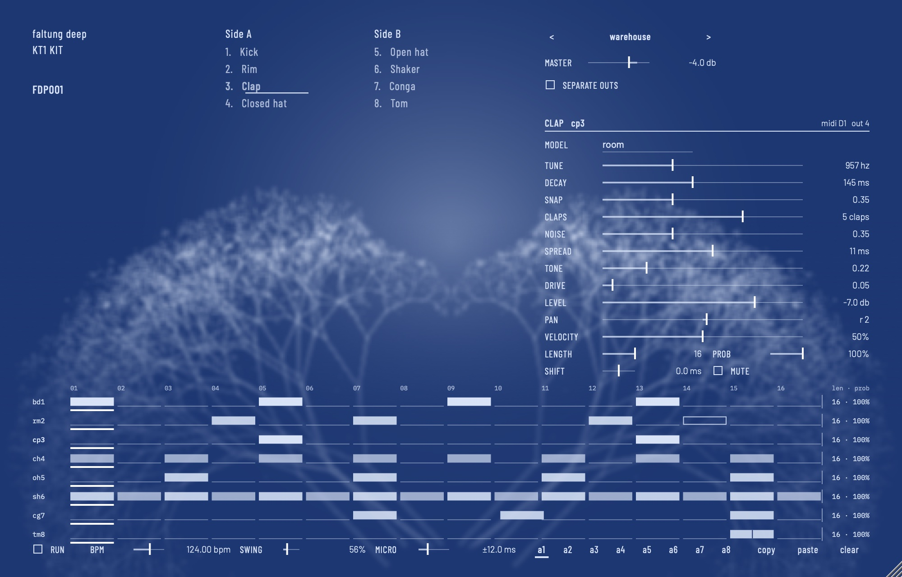
The track list at the top is the voice selector: Side A 1–4 and Side B 5–8 — click a name to select and hear it; it lights up on every hit. On the right, the selected voice's model and eight sound controls, then its track settings. At the bottom the step grid and the global row: run, internal bpm, swing, micro range, patterns a1–a8 and copy / paste / clear.
| voice | engine | midi | output |
|---|---|---|---|
| bd1 kick | kick | C1 | 2 |
| rm2 rim | rim | C#1 | 3 |
| cp3 clap | clap | D1 | 4 |
| ch4 closed hat | hat | D#1 | 5 |
| oh5 open hat | hat | E1 | 6 |
| sh6 shaker | hat (noise) | F1 | 7 |
| cg7 conga | perc (conga) | F#1 | 8 |
| tm8 tom | tom | G1 | 9 |
| click | step on / off |
| drag up / down | velocity |
| drag across | paint |
| shift-drag | microtiming — the step slides early or late |
| alt-click | probability 100 → 75 → 50 → 25 % |
| right-click | ratchet 1–4 |
| alt-drag up / down · alt-scroll | the ratchet's curve, out 7 … even … in 7 (see kt2) |
| click a step number | the selected track's length ends there |
Grooves: warehouse (four to the floor, offbeat open hat, shaker 16ths, conga answers), jazzy (broken kick, busy hats, rim syncopation), minimal deep (half-probability shaker, sparse rims), broken (off-grid kick). Shaker and conga sit a little late in every factory pattern; push them further with the track shift.
| control | range | default | what it does |
|---|---|---|---|
| run (internal clock) | off / on | off | internal clock (standalone, or when the host is stopped) |
| internal bpm | 60.00 bpm … 180.00 bpm | 124.00 bpm | internal tempo |
| swing | 50% … 75% | 54% | offbeat 16ths later, 50% = straight |
| micro range | ±0.0 ms … ±40.0 ms | ±12.0 ms | how far the per-step microtiming reaches (± ms) |
| pattern | a1, a2, a3, a4, a5, a6, a7, a8 | a1 | current pattern a1–a8 — automate it to arrange |
| master | -24.0 db … +6.0 db | -4.0 db | output level |
| <voice> model | clap, snap, room, tight | room | which engine variant (see the models above) |
| <voice> tune | 500 hz … 3.20 khz | 957 hz | centre of the band-pass, 500 hz – 3.2 khz (for the clap; each voice names its own) |
| <voice> decay | 30 ms … 1.00 s | 145 ms | length of the tail (for the clap; each voice names its own) |
| <voice> snap | 0.00 … 1.00 | 0.35 | bright transient on the first burst (for the clap; each voice names its own) |
| <voice> claps | 2 claps … 6 claps | 5 claps | number of hands, 2–6 (for the clap; each voice names its own) |
| <voice> noise | 0.00 … 1.00 | 0.35 | a second, higher noise band (for the clap; each voice names its own) |
| <voice> spread | 4.0 ms … 26 ms | 11 ms | time between the hands, 4–26 ms (for the clap; each voice names its own) |
| <voice> tone | 0.00 … 1.00 | 0.22 | narrowness of the band (high = more pitched) (for the clap; each voice names its own) |
| <voice> drive | 0.00 … 1.00 | 0.05 | saturation (for the clap; each voice names its own) |
| <voice> level | off … 6.0 db | -7.0 db | output level, off … +6 db |
| <voice> pan | l 50 … r 50 | r 2 | stereo position |
| <voice> velocity | 0% … 100% | 50% | how much velocity changes level and brightness |
| <voice> length | 1 … 16 | 16 | pattern length of the track in steps (different lengths = polymeter) |
| <voice> probability | 0% … 100% | 100% | probability multiplier for every step of the track |
| <voice> shift | -30.0 ms … +30.0 ms | 0.0 ms | moves the whole track earlier or later in ms |
| <voice> mute | off / on | off | silences the track |
| separate outputs | off / on | off | separate outputs: each voice to its own output 2–9 (VST3 does this by itself when you route an output; AU / VST2 hosts need this switch on, otherwise everything plays on the main pair) |
presets warehouse · jazzy · minimal deep · broken · empty
A loop slicer for chopped breaks and resampled grooves. It starts with a bar of kt1's "warehouse" groove; drop any loop onto the waveform to replace it.
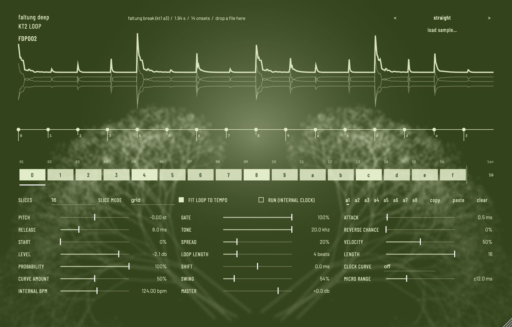
Slices are cut on a grid or on the hits (onsets); each lit step shows the slice it plays — drag up/down to choose another, alt-click to reverse, shift-drag (or shift-scroll) for microtiming, right-click for a ratchet of 1–4 hits. fit keeps the loop in time with the host tempo.
| gesture | does |
|---|---|
| cmd-drag up / down · scroll | pitch per step, ± 24 semitones on top of pitch, shown on the step (+7). Each step's pitch is a parameter (step 1 pitch … step 16 pitch), so a host can automate it; the eight patterns share the sixteen pitches |
| click a step number | pattern length: the loop ends after that step (the length parameter, 1–16; a thin mark shows the end, later steps are dimmed) |
| right-click | ratchet 1 → 2 → 3 → 4 hits inside the step, drawn as thin lines |
| alt-drag up / down · alt-scroll | the ratchet's curve, as AERIA OS's CURV: even spaces the hits equally; in 1 … in 7 crowds them together toward the end of the step, like a ball coming to rest; out 1 … out 7 spreads them out. Each gap is the one before times a ratio — about 0.89 at 1, 0.45 at 7 — and the row always fits the step exactly. An alt-click without a drag still reverses the step |
The clock curve (AERIA's CLK, after norns' clockabout) bends the whole loop rather than one step: along accel the steps start long and get shorter, decel the other way, arch is slow at both ends and fast in the middle, bulge the reverse, wave a push and a pull, rand a fixed random set of lengths. curve amount is how far it goes; the loop keeps its plain length, so step 1 always lands on the bar. The step cells on the grid stretch and shrink to show where the steps fall. Preset pitched roll uses all of this: pitched steps, a ratchet that crowds in on the last step, and a slowing clock.
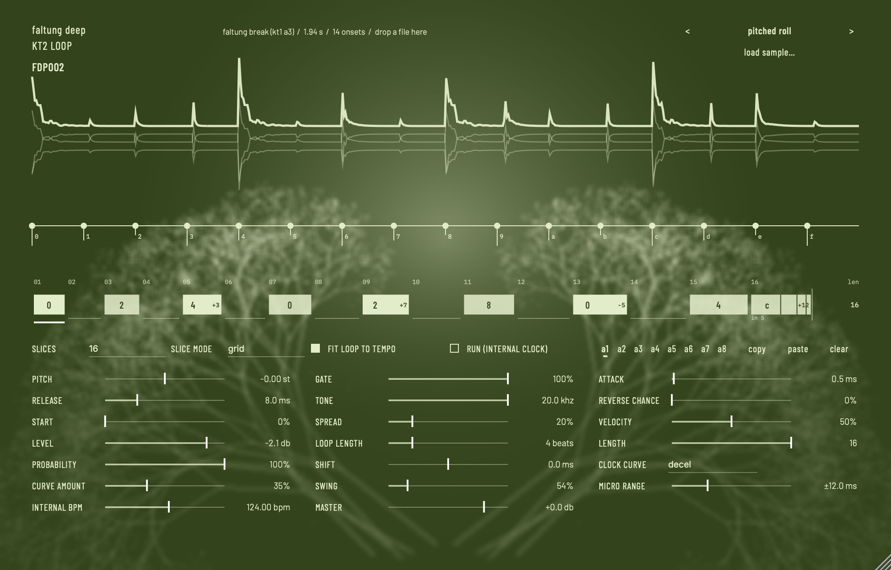
| control | range | default | what it does |
|---|---|---|---|
| run (internal clock) | off / on | off | internal clock (standalone, or when the host is stopped) |
| internal bpm | 60.00 bpm … 180.00 bpm | 124.00 bpm | internal tempo |
| swing | 50% … 75% | 54% | offbeat 16ths later, 50% = straight |
| micro range | ±0.0 ms … ±40.0 ms | ±12.0 ms | how far the per-step microtiming reaches (± ms) |
| pattern | a1, a2, a3, a4, a5, a6, a7, a8 | a1 | current pattern a1–a8 — automate it to arrange |
| master | -24.0 db … +6.0 db | +0.0 db | output level |
| slices | 4, 8, 16, 32 | 16 | how many slices the loop is cut into |
| slice mode | grid, onsets | grid | grid: equal slices · onsets: slices start on detected hits |
| start | 0% … 100% | 0% | skips the beginning of the loop |
| pitch | -24.00 st … +24.00 st | -0.00 st | replay pitch |
| gate | 2% … 100% | 100% | how much of each slice plays |
| attack | 0.0 ms … 30.0 ms | 0.5 ms | fade-in of each slice |
| release | 0.5 ms … 200.0 ms | 8.0 ms | fade-out of each slice (also the crossfade when slices cut each other) |
| tone | 300 hz … 20.0 khz | 20.0 khz | low-pass on the slices |
| reverse chance | 0% … 100% | 0% | chance a step plays reversed |
| spread | 0% … 100% | 20% | random stereo placement per hit |
| level | off … 6.0 db | -2.1 db | output level |
| velocity | 0% … 100% | 50% | velocity sensitivity |
| fit loop to tempo | off / on | on | replay speed follows the host tempo |
| loop length | 1 beats … 16 beats | 4 beats | how many beats the loop is (set automatically when you load) |
| length | 1 … 16 | 16 | pattern length of the track in steps (different lengths = polymeter) |
| probability | 0% … 100% | 100% | probability multiplier for every step of the track |
| shift | -30.0 ms … +30.0 ms | 0.0 ms | moves the whole track earlier or later in ms |
| mute | off / on | off | silences the track |
| clock curve | off, accel, decel, arch, bulge, wave, rand | off | the clock curve (after AERIA OS / norns' clockabout): over each loop the steps speed up or slow down along a shape — accel: long steps first; decel: the other way; arch: slow ends, fast middle; bulge: fast ends, slow middle; wave: a push-pull; rand: a fixed random set. The loop keeps its length, so step 1 always lands on time |
| curve amount | 0% … 100% | 50% | how far the clock curve bends the steps (100% ≈ ± 90% of a step) |
| step 1 … 16 pitch | -24 st … +24 st | 0 st | pitch of each step in semitones, added to pitch: sixteen parameters, step 1 pitch … step 16 pitch (cmd-drag or scroll on a step). The patterns share them |
presets straight · chopped · half · sparse · pitched roll
Each module is one drum engine as its own instrument, for drum racks and midi clips. Four models and eight controls per engine; level, pan, velocity, key tracking and choke on all of them. Click the tree to hear the sound.
Deep house kicks are round and a little long. deep round is the thud model with a soft click and some sub; lofi 909 drives the 909 shape; long thud for sparse tracks.
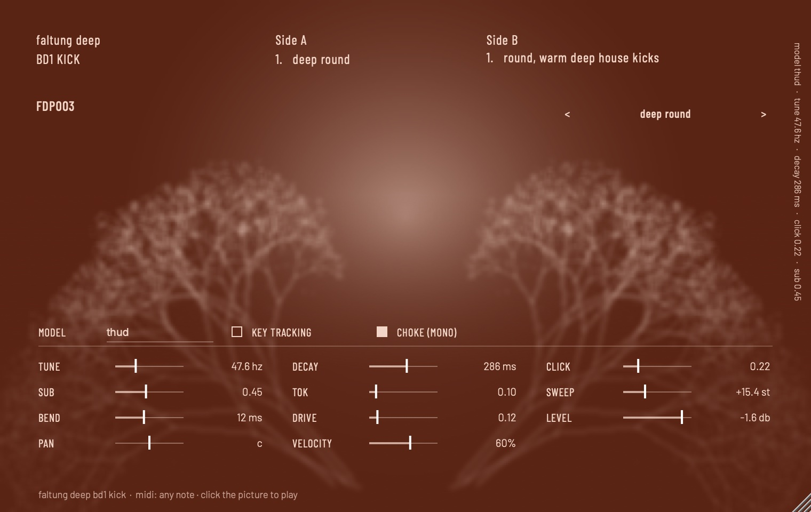
| tok | tight and dry, strong wooden overtone; the minimal kick |
| thud | holds its body then lets go: deep, rounded |
| 909 | sine pushed towards a triangle with a noisy click |
| sine | pure sine with a very soft click |
| control | range | default | what it does |
|---|---|---|---|
| model | tok, thud, 909, sine | tok | which engine variant (see the models above) |
| tune | 30.0 hz … 140 hz | 55.6 hz | pitch the body settles on, 30–140 hz |
| decay | 35 ms … 1.60 s | 174 ms | length of the body, 35 ms – 1.6 s |
| click | 0.00 … 1.00 | 0.35 | the attack: a filtered noise burst and a short bright ping |
| sub | 0.00 … 1.00 | 0.25 | a sine an octave under the body with a longer tail |
| tok | 0.00 … 1.00 | 0.45 | a wooden overtone well above the fundamental — the dry Perlon "tok" |
| sweep | +0.0 st … +48.0 st | +20.2 st | how far the pitch falls at the start, up to 4 octaves |
| bend | 2.0 ms … 140 ms | 7.2 ms | how fast it falls, 2–140 ms |
| drive | 0.00 … 1.00 | 0.15 | saturation after the engine (anti-aliased tanh) |
| level | off … 6.0 db | -1.6 db | output level, off … +6 db |
| pan | l 50 … r 50 | c | stereo position |
| velocity | 0% … 100% | 60% | how much velocity changes level and brightness |
| key tracking | off / on | off | notes change the pitch (c3 = as tuned) |
| choke (mono) | off / on | on | a new hit cuts the previous one (mono) |
presets deep round · lofi 909 · soft sine · dusty tok · long thud
Snares are rare; brush is the one you will use most — a soft noise swell under the clap.
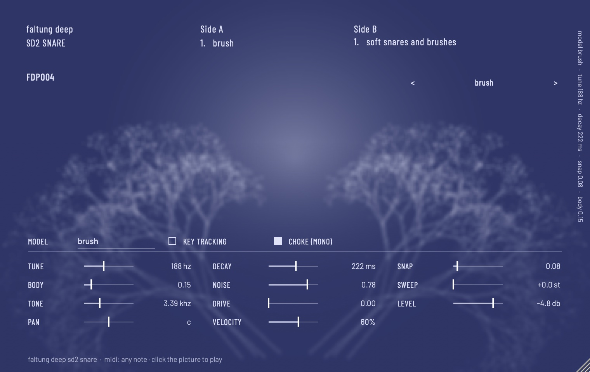
| tuned | three shell modes and filtered wires |
| fm | a frequency-modulated shell, cracky |
| brush | pink-noise wires that swell in, little shell |
| 808 | two bridged modes and high-passed noise |
| control | range | default | what it does |
|---|---|---|---|
| model | tuned, fm, brush, 808 | tuned | which engine variant (see the models above) |
| tune | 110 hz … 420 hz | 201 hz | pitch of the shell modes, 110–420 hz |
| decay | 40 ms … 900 ms | 139 ms | length of the wires (the shell is about half) |
| snap | 0.00 … 1.00 | 0.45 | a bright noise transient |
| body | 0.00 … 1.00 | 0.55 | level of the tuned shell |
| noise | 0.00 … 1.00 | 0.55 | level of the wires |
| sweep | +0.0 st … +12.0 st | +2.4 st | pitch drop of the shell at the hit |
| tone | 1.80 khz … 13.0 khz | 5.34 khz | brightness of the wires |
| drive | 0.00 … 1.00 | 0.10 | saturation |
| level | off … 6.0 db | -4.8 db | output level, off … +6 db |
| pan | l 50 … r 50 | c | stereo position |
| velocity | 0% … 100% | 60% | how much velocity changes level and brightness |
| key tracking | off / on | off | notes change the pitch (c3 = as tuned) |
| choke (mono) | off / on | on | a new hit cuts the previous one (mono) |
presets brush · soft tuned · 808 warm
Wooden rims and sticks for the syncopation. wooden rim and deep tok sit well a few ms early (track shift in kt1).
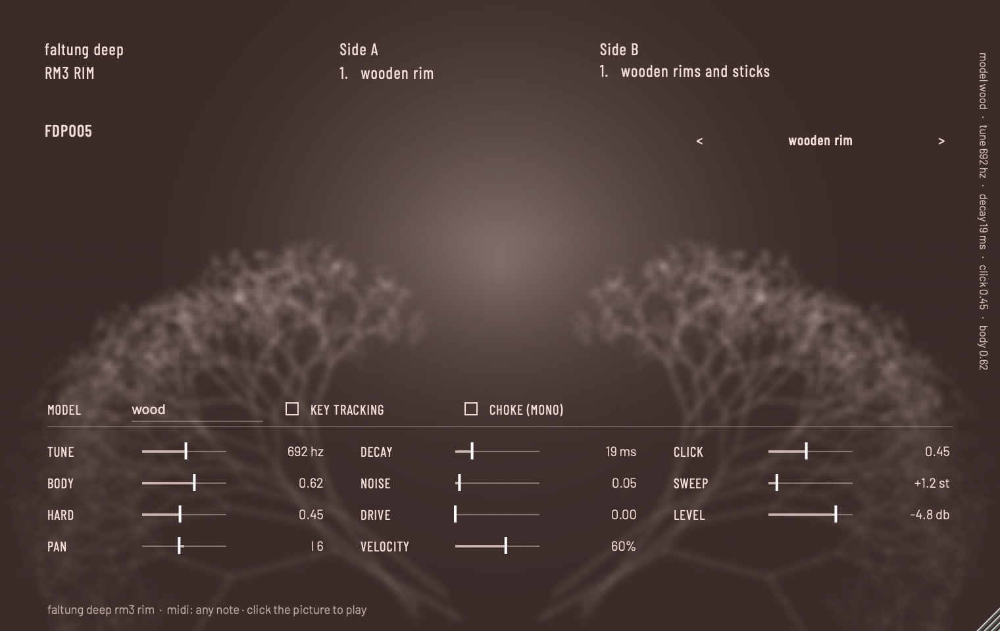
| rim | rim-shot mode ratios |
| wood | woodblock ratios, hollow |
| tok | low and close together: the Villalobos tok |
| metal | bell-like, long |
| control | range | default | what it does |
|---|---|---|---|
| model | rim, wood, tok, metal | tok | which engine variant (see the models above) |
| tune | 180 hz … 2.40 khz | 593 hz | fundamental of the struck object, 180 hz – 2.4 khz |
| decay | 8.0 ms … 600 ms | 21 ms | ring time (higher modes die sooner) |
| click | 0.00 … 1.00 | 0.68 | level of the stick itself |
| body | 0.00 … 1.00 | 0.41 | tilts energy towards the fundamental (low = thin and clacky) |
| noise | 0.00 … 1.00 | 0.12 | a band of noise around the third mode |
| sweep | +0.0 st … +12.0 st | +3.6 st | a small pitch fall at the hit |
| hard | 0.00 … 1.00 | 0.55 | stick hardness: brightness and shortness of the excitation |
| drive | 0.00 … 1.00 | 0.00 | saturation |
| level | off … 6.0 db | -4.8 db | output level, off … +6 db |
| pan | l 50 … r 50 | l 6 | stereo position |
| velocity | 0% … 100% | 60% | how much velocity changes level and brightness |
| key tracking | off / on | off | notes change the pitch (c3 = as tuned) |
| choke (mono) | off / on | off | a new hit cuts the previous one (mono) |
presets wooden rim · deep tok · soft rimshot · stick
Hats and shakers. shaker is pure noise with no metal; play it on 16ths with low velocity on the offs. A# notes play the open hat.
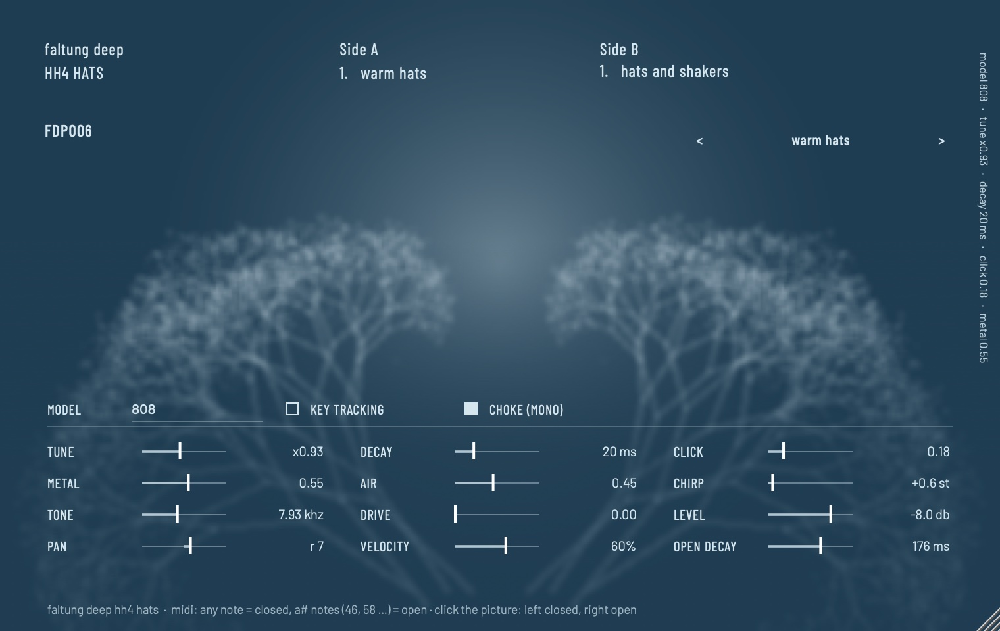
| 808 | six band-limited squares at the classic ratios |
| noise | resonant band-passed noise |
| ring | an inharmonic fm pair |
| tick | very short metal |
| control | range | default | what it does |
|---|---|---|---|
| model | 808, noise, ring, tick | 808 | which engine variant (see the models above) |
| tune | x0.50 … x2.00 | x1.00 | scales all six metallic oscillators (x0.5 – x2) |
| decay | 6.0 ms … 1.40 s | 34 ms | length (the open hat has its own decay in hh4) |
| click | 0.00 … 1.00 | 0.30 | stick transient |
| metal | 0.00 … 1.00 | 0.60 | level of the square-wave metal |
| air | 0.00 … 1.00 | 0.40 | level of noise |
| chirp | +0.0 st … +12.0 st | +1.2 st | a falling pitch at the hit |
| tone | 5.00 khz … 15.0 khz | 9.15 khz | centre of the band-pass, 5–15 khz |
| drive | 0.00 … 1.00 | 0.00 | saturation |
| level | off … 6.0 db | -8.0 db | output level, off … +6 db |
| pan | l 50 … r 50 | r 7 | stereo position |
| velocity | 0% … 100% | 60% | how much velocity changes level and brightness |
| key tracking | off / on | off | notes change the pitch (c3 = as tuned) |
| choke (mono) | off / on | on | a new hit cuts the previous one (mono) |
| open decay | 6.0 ms … 1.40 s | 176 ms | decay of the open hat (a# notes) |
presets warm hats · shaker · noise hats · tick hats
soft room clap: five hands spread wide with a short room — the classic deep house clap, best a little late.
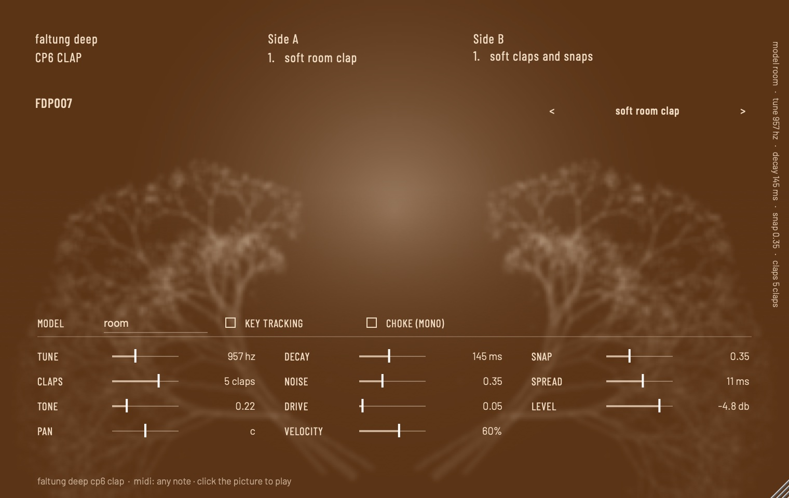
| clap | a burst train then a tail |
| snap | finger snap: one burst and a resonance |
| room | clap with a small room |
| tight | two hands, short |
| control | range | default | what it does |
|---|---|---|---|
| model | clap, snap, room, tight | snap | which engine variant (see the models above) |
| tune | 500 hz … 3.20 khz | 1.05 khz | centre of the band-pass, 500 hz – 3.2 khz |
| decay | 30 ms … 1.00 s | 206 ms | length of the tail |
| snap | 0.00 … 1.00 | 0.50 | bright transient on the first burst |
| claps | 2 claps … 6 claps | 4 claps | number of hands, 2–6 |
| noise | 0.00 … 1.00 | 0.45 | a second, higher noise band |
| spread | 4.0 ms … 26 ms | 7.0 ms | time between the hands, 4–26 ms |
| tone | 0.00 … 1.00 | 0.45 | narrowness of the band (high = more pitched) |
| drive | 0.00 … 1.00 | 0.10 | saturation |
| level | off … 6.0 db | -4.8 db | output level, off … +6 db |
| pan | l 50 … r 50 | c | stereo position |
| velocity | 0% … 100% | 60% | how much velocity changes level and brightness |
| key tracking | off / on | off | notes change the pitch (c3 = as tuned) |
| choke (mono) | off / on | off | a new hit cuts the previous one (mono) |
presets soft room clap · snap · tight clap
Congas, bongos and a soft bell. With key tracking on they can be played as a small percussion kit across the keyboard.
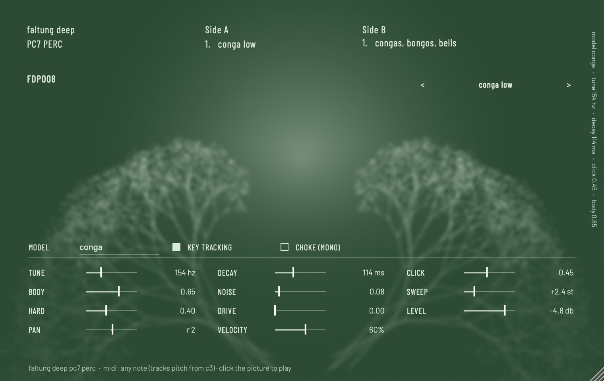
| conga | membrane modes, low |
| bongo | membrane, higher and brighter |
| bell | inharmonic, long |
| glass | clear, high, inharmonic |
| control | range | default | what it does |
|---|---|---|---|
| model | conga, bongo, bell, glass | conga | which engine variant (see the models above) |
| tune | 60.0 hz … 1.40 khz | 212 hz | fundamental, 60 hz – 1.4 khz |
| decay | 20 ms … 2.50 s | 85 ms | ring time |
| click | 0.00 … 1.00 | 0.50 | level of the strike |
| body | 0.00 … 1.00 | 0.50 | energy in the fundamental |
| noise | 0.00 … 1.00 | 0.30 | noise around the third mode |
| sweep | +0.0 st … +12.0 st | +5.4 st | membrane pitch glide after the hit |
| hard | 0.00 … 1.00 | 0.30 | mallet hardness |
| drive | 0.00 … 1.00 | 0.00 | saturation |
| level | off … 6.0 db | -4.8 db | output level, off … +6 db |
| pan | l 50 … r 50 | r 2 | stereo position |
| velocity | 0% … 100% | 60% | how much velocity changes level and brightness |
| key tracking | off / on | on | notes change the pitch (c3 = as tuned) |
| choke (mono) | off / on | off | a new hit cuts the previous one (mono) |
presets conga low · conga high · bongo · soft bell
Called dust here: vinyl crackle, soft ticks and pops to sit under everything.
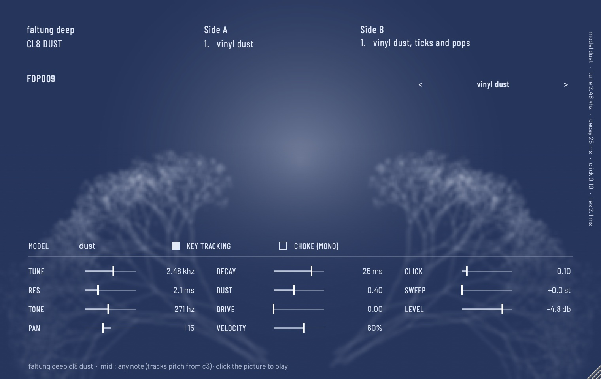
| tick | an impulse into a resonance |
| pop | one windowed sine cycle |
| dust | random sparse impulses — vinyl crackle |
| blip | a sine with a very fast pitch drop |
| control | range | default | what it does |
|---|---|---|---|
| model | tick, pop, dust, blip | tick | which engine variant (see the models above) |
| tune | 300 hz … 14.0 khz | 1.15 khz | frequency of the click, 300 hz – 14 khz |
| decay | 0.8 ms … 80 ms | 3.2 ms | overall length, 0.8–80 ms |
| click | 0.00 … 1.00 | 0.55 | the raw impulse |
| res | 0.8 ms … 40 ms | 8.4 ms | ring of the resonance |
| dust | 0.00 … 1.00 | 0.10 | density of crackle (and noise) |
| sweep | +0.0 st … +48.0 st | +9.6 st | pitch fall (for blips) |
| tone | 30.0 hz … 4.00 khz | 271 hz | high-pass that thins the click |
| drive | 0.00 … 1.00 | 0.00 | saturation |
| level | off … 6.0 db | -4.8 db | output level, off … +6 db |
| pan | l 50 … r 50 | l 15 | stereo position |
| velocity | 0% … 100% | 60% | how much velocity changes level and brightness |
| key tracking | off / on | on | notes change the pitch (c3 = as tuned) |
| choke (mono) | off / on | off | a new hit cuts the previous one (mono) |
presets vinyl dust · soft tick · pop
Deep toms for fills and the low "blip" toms of dub-house.
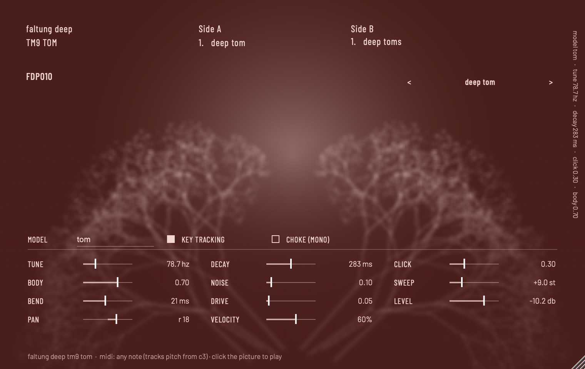
| tom | sine leaning to triangle |
| blip | pure sine, quick fall: the minimal blip |
| fm | fm tom, woody |
| low | extra sub, long |
| control | range | default | what it does |
|---|---|---|---|
| model | tom, blip, fm, low | tom | which engine variant (see the models above) |
| tune | 45.0 hz … 420 hz | 215 hz | pitch, 45–420 hz |
| decay | 50 ms … 1.60 s | 141 ms | length |
| click | 0.00 … 1.00 | 0.60 | a short bright strike |
| body | 0.00 … 1.00 | 0.40 | weight of the fundamental |
| noise | 0.00 … 1.00 | 0.20 | noise band at twice the pitch |
| sweep | +0.0 st … +36.0 st | +0.0 st | pitch fall |
| bend | 3.0 ms … 220 ms | 11 ms | speed of the fall |
| drive | 0.00 … 1.00 | 0.00 | saturation |
| level | off … 6.0 db | -10.2 db | output level, off … +6 db |
| pan | l 50 … r 50 | r 18 | stereo position |
| velocity | 0% … 100% | 60% | how much velocity changes level and brightness |
| key tracking | off / on | on | notes change the pitch (c3 = as tuned) |
| choke (mono) | off / on | off | a new hit cuts the previous one (mono) |
presets deep tom · low tom · blip
Micro-sampling for chopped textures: grains and stutters cut from whatever passes through, in time with the host.
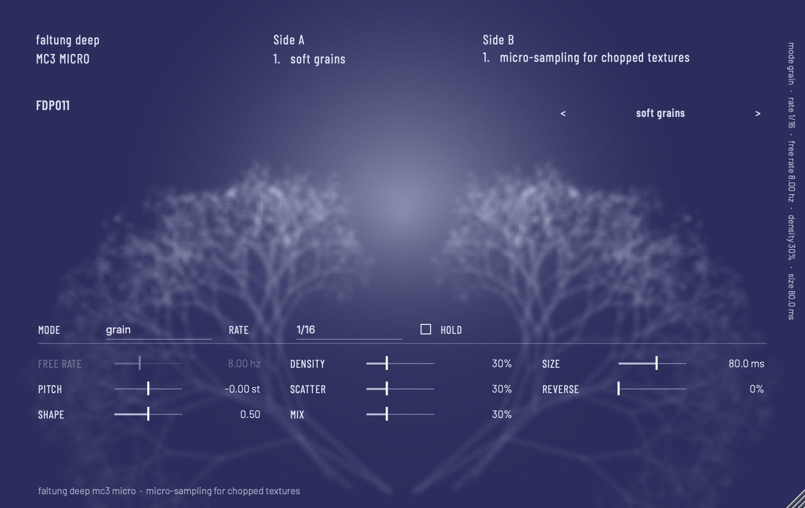
| control | range | default | what it does |
|---|---|---|---|
| mode | cut, grain, click | grain | cut: repeats the latest slice of input for the coming step · grain: scattered grains from the recent past · click: very short grains, several per step |
| rate | 1/64, 1/32, 1/32 d, 1/16 t, 1/16, 3/32, 1/16 d, 1/8 t, 1/8, 1/8 d, 1/4 t, 1/4, 1/4 d, 1/2, 1 bar, 2 bars, 4 bars, 8 bars, 16 bars, free | 1/16 | the grid that grains fire on, synced to the host; the last entry, free, runs it from free rate instead, whatever the tempo |
| free rate | 0.50 hz … 200.0 hz | 8.00 hz | the grid in Hz while the rate is free (dimmed otherwise) |
| density | 0% … 100% | 45% | chance that something fires on each step |
| size | 2.0 ms … 250.0 ms | 60.0 ms | length of a grain or cut (click mode maps this to 0.6–14 ms) |
| pitch | -24.00 st … +24.00 st | -0.00 st | replay pitch of the grains |
| scatter | 0% … 100% | 30% | how far back in the last 2 seconds grains are taken from |
| reverse | 0% … 100% | 0% | chance a grain plays backwards |
| shape | 0.00 … 1.00 | 0.50 | grain edges, hard cut … smooth |
| hold | off / on | off | stop recording: keep cutting what is already in memory |
| mix | 0% … 100% | 50% | level of the grains (cut mode ducks the dry signal while it repeats) |
presets soft grains · stutter fill · dust from audio
Tape echo with the filter inside the repeats — for chord stabs (1/8 dotted), rim throws and dub washes.
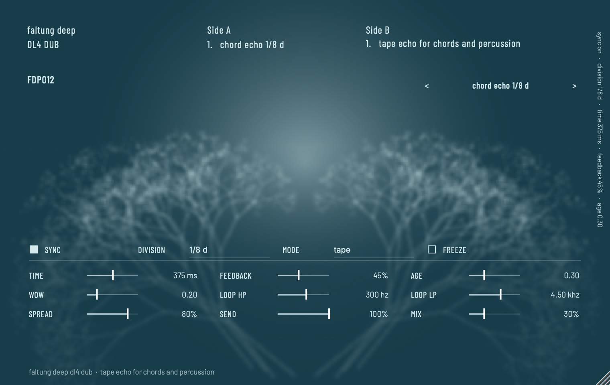
| control | range | default | what it does |
|---|---|---|---|
| sync | off / on | on | time follows the host tempo |
| division | 1/64, 1/32, 1/32 d, 1/16 t, 1/16, 3/32, 1/16 d, 1/8 t, 1/8, 1/8 d, 1/4 t, 1/4, 1/4 d, 1/2, 1 bar, 2 bars, 4 bars, 8 bars, 16 bars | 1/16 d | synced echo time |
| time | 2.0 ms … 2000 ms | 375 ms | free echo time in ms |
| feedback | 0% … 110% | 55% | repeats; above 100% it builds up (the loop saturates instead of exploding) |
| age | 0.00 … 1.00 | 0.35 | tape age: darker, more saturation, more flutter |
| wow | 0.00 … 1.00 | 0.20 | slow pitch wander |
| loop hp | 20.0 hz … 2.00 khz | 200 hz | high-pass inside the loop — each repeat gets thinner |
| loop lp | 500 hz … 20.0 khz | 3.50 khz | low-pass inside the loop — each repeat gets darker |
| spread | 0% … 100% | 50% | from a mono echo to full ping-pong |
| mode | tape, bbd, clean | tape | tape (saturation + wow) · bbd (darker bucket-brigade) · clean (digital) |
| freeze | off / on | off | stop input, hold the loop at unity: an infinite dub loop |
| send | 0% … 100% | 100% | send level into the delay (automate it for dub throws) |
| mix | 0% … 100% | 35% | dry / echo balance |
presets chord echo 1/8 d · tape space 3/16 · dub throw
Warm rooms, plates and a big chamber. Keep the low cut up so the kick stays dry.
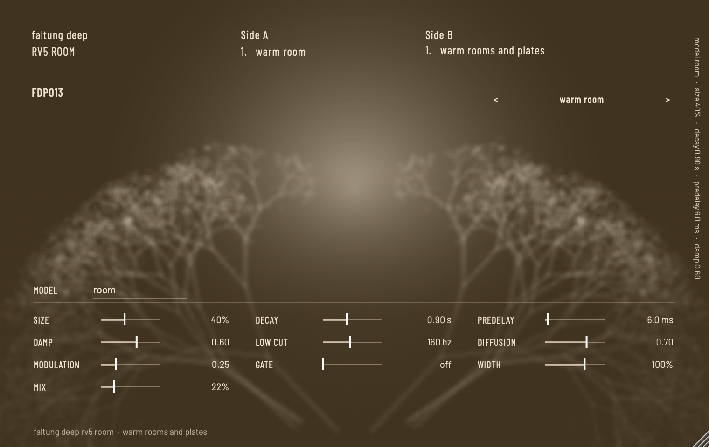
| control | range | default | what it does |
|---|---|---|---|
| model | room, plate, air, chamber | room | room · plate (denser, no early reflections) · air (tiny, bright) · chamber (large) |
| size | 0% … 100% | 35% | size of the space |
| decay | 0.10 s … 8.00 s | 0.70 s | time to fall 60 db |
| predelay | 0.0 ms … 120.0 ms | 6.0 ms | gap before the reverb |
| damp | 0.00 … 1.00 | 0.50 | high frequencies die faster |
| low cut | 20.0 hz … 1.00 khz | 160 hz | high-pass on the reverb input |
| diffusion | 0.00 … 1.00 | 0.70 | how quickly echoes smear into a wash |
| modulation | 0.00 … 1.00 | 0.25 | slow movement in the tail (chorus-like, removes ringing) |
| gate | off … -12 db | off | closes the tail when the input stops; the value is the threshold |
| width | 0% … 150% | 100% | stereo width of the tail |
| mix | 0% … 100% | 22% | dry / reverb balance |
presets warm room · plate · big chamber
The swing of a drum machine on any audio: put it on a straight loop or a whole drum bus.
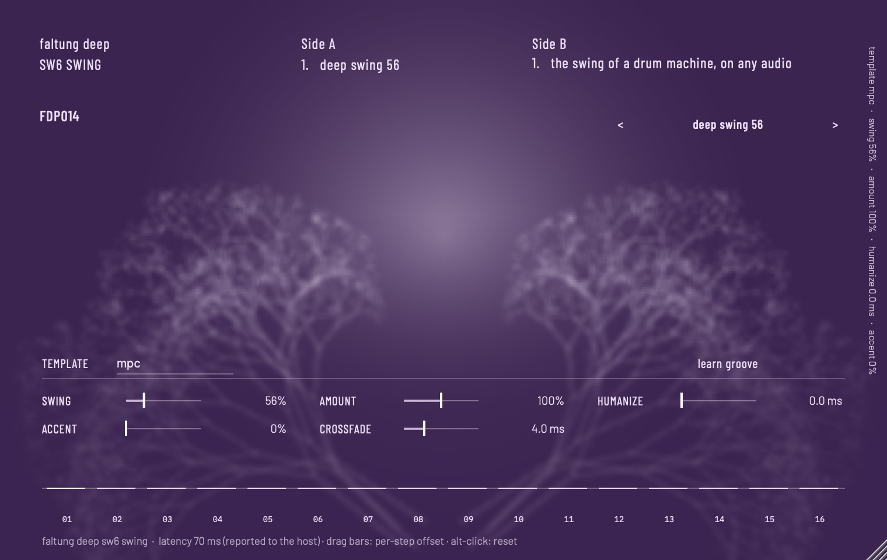
| control | range | default | what it does |
|---|---|---|---|
| template | straight, mpc, shuffle, push, drag, drunk | shuffle | straight · mpc (swung offbeats) · shuffle (swung, 2 and 4 laid back) · push (offbeats early) · drag (everything but the downbeats late) · drunk (random) |
| swing | 50% … 75% | 56% | amount of offbeat swing used by the templates |
| amount | 0% … 200% | 100% | scales the whole groove, 0–200% |
| humanize | 0.0 ms … 15.0 ms | 0.0 ms | random timing per step, in ms |
| accent | 0% … 100% | 0% | level accents that come with each template |
| crossfade | 1.0 ms … 12.0 ms | 4.0 ms | length of the crossfade where a step switches its delay |
| step 1 | -50% … +50% | 0% | offset for this 16th, in % of a 16th (positive = later) |
| step 16 | -50% … +50% | 0% | offset for this 16th, in % of a 16th (positive = later) |
presets deep swing 56 · mpc 58 · shuffle · loose
A DJ isolator with kills and a warm one-knob filter; the 4-bar sweep preset is the classic build.
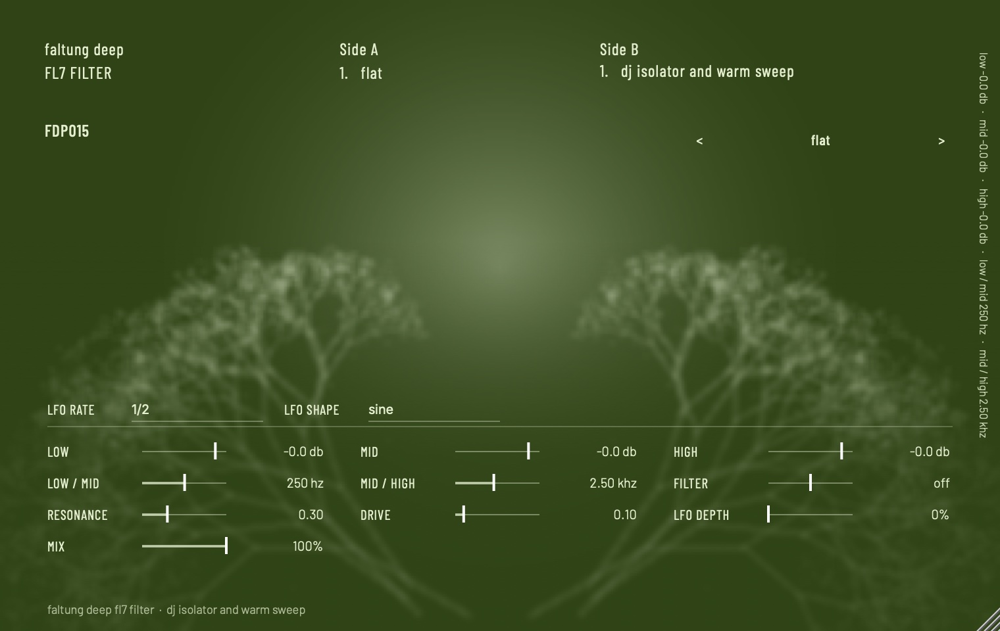
| control | range | default | what it does |
|---|---|---|---|
| low | kill … +6.0 db | -0.0 db | low band level; at the bottom it is a kill |
| mid | kill … +6.0 db | -0.0 db | mid band level |
| high | kill … +6.0 db | -0.0 db | high band level |
| low / mid | 40.0 hz … 1.20 khz | 250 hz | crossover between low and mid |
| mid / high | 600 hz … 14.0 khz | 2.50 khz | crossover between mid and high |
| filter | lp 45.0 hz … hp 12.0 khz | off | one-knob filter: left = low-pass closing, centre = off, right = high-pass opening |
| resonance | 0.00 … 1.00 | 0.30 | resonance of the sweep filter |
| drive | 0.00 … 1.00 | 0.10 | saturation before the sweep filter |
| lfo rate | 1/64, 1/32, 1/32 d, 1/16 t, 1/16, 3/32, 1/16 d, 1/8 t, 1/8, 1/8 d, 1/4 t, 1/4, 1/4 d, 1/2, 1 bar, 2 bars, 4 bars, 8 bars, 16 bars | 1/2 | lfo rate, synced |
| lfo depth | 0% … 100% | 0% | how far the lfo moves the sweep |
| lfo shape | sine, triangle, square, s&h | sine | sine · triangle · square · sample & hold |
| mix | 0% … 100% | 100% | dry / filtered balance |
presets flat · warm lowpass · dj sweep 4 bars · low kill
Bus compression and tape for the drum group — or pumping, sidechain-like movement in parallel.
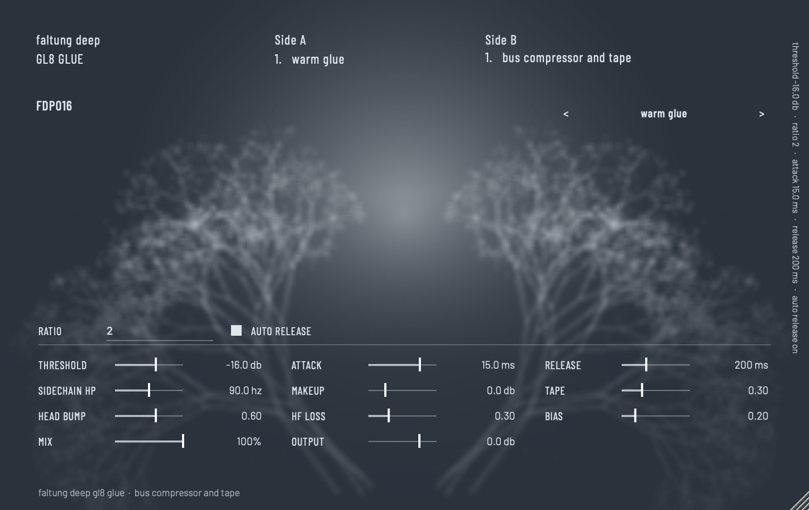
| control | range | default | what it does |
|---|---|---|---|
| threshold | -40.0 db … 0.0 db | -14.0 db | level where compression starts |
| ratio | 1.5, 2, 4, 10 | 2 | 1.5, 2, 4 or 10 to 1 |
| attack | 0.10 ms … 30.0 ms | 10.0 ms | how fast it clamps down |
| release | 50 ms … 1200 ms | 200 ms | how fast it lets go (when auto is off) |
| auto release | off / on | on | program-dependent release: fast on transients, slow on sustained material |
| sidechain hp | 20.0 hz … 300 hz | 90.0 hz | high-pass on the detector so the kick does not pump everything |
| makeup | -6.0 db … +18.0 db | 0.0 db | gain after compression |
| tape | 0.00 … 1.00 | 0.25 | tape saturation amount |
| head bump | 0.00 … 1.00 | 0.50 | low head-bump that comes with the tape |
| hf loss | 0.00 … 1.00 | 0.30 | high-frequency loss of the tape |
| bias | 0.00 … 1.00 | 0.20 | asymmetry: adds even harmonics |
| mix | 0% … 100% | 100% | parallel compression: dry / processed |
| output | -18.0 db … +6.0 db | 0.0 db | output level |
presets warm glue · tape only · pumping
Chord stabs, organs, electric pianos, pads and sub bass. The engine is faltung's bass synth (two unison oscillators with fm, sub, filter, formant, comb, distortion, envelopes, three lfos, a step lfo and an 8-slot modulation matrix) with one addition: one key plays a whole chord.
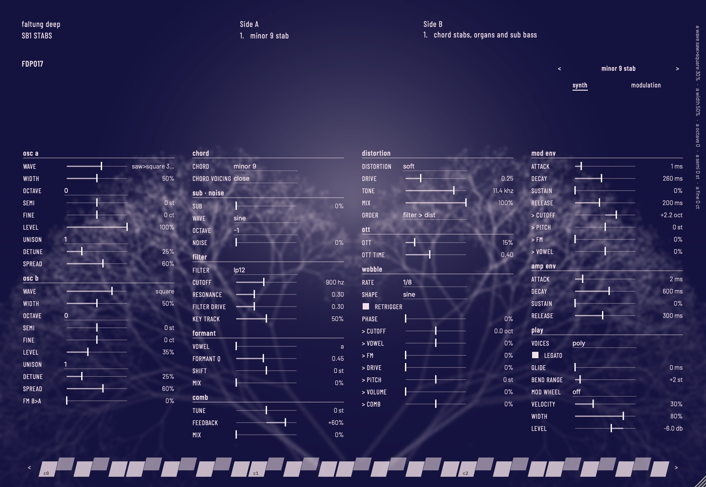
Set chord and every key plays that chord with the key as its root; each chord tone gets its own voice (twelve voices, so two overlapping six-note chords fit). voicing: close; open (the second tone up an octave — wider, more "house"); drop 2 (the second-highest tone down an octave — softer, jazzier).
| chord | semitones above the key |
|---|---|
| off | single notes |
| fifth | 0 7 |
| octave | 0 12 |
| major | 0 4 7 |
| minor | 0 3 7 |
| major 7 | 0 4 7 11 |
| minor 7 | 0 3 7 10 |
| dominant 7 | 0 4 7 10 |
| major 9 | 0 4 7 11 14 |
| minor 9 | 0 3 7 10 14 |
| minor 11 | 0 3 7 10 14 17 |
| sus 4 | 0 5 7 |
| 6 / 9 | 0 4 7 9 14 |
| minor 9 (no 5th) | 0 3 10 14 |
| deep stack | 0 7 10 14 17 |
The deep house stab is minor 9 or minor 7, short (decay 300–600 ms, no sustain), a filter that opens with the mod envelope, and an echo (dl4 "chord echo 1/8 d"). Play it on the offbeats.
The modulation tab holds lfo 2, lfo 3 (to 16 bars, one-shot), a 16-step lfo and the matrix — slow filter movement on pads, tremolo on the electric piano (as in its preset), stepped vowel patterns.
| control | range | default | what it does |
|---|---|---|---|
| a wave | sine … hard | saw | waveform: sine → triangle → saw → square → hard (saw × square); in-between values blend |
| a width | 5% … 95% | 50% | pulse width of the square |
| a octave | -3, -2, -1, 0, +1, +2, +3 | 0 | octave |
| a semi | -12 st … +12 st | 0 st | semitones |
| a fine | -100 ct … 100 ct | 0 ct | cents |
| a level | 0% … 100% | 100% | output level |
| a unison | 1, 2, 3, 4, 5, 6, 7 | 1 | unison copies (1–7) |
| a detune | 0% … 100% | 25% | spread of the unison copies in pitch (up to ±60 cents) |
| a spread | 0% … 100% | 60% | spread of the unison copies in stereo |
| b wave | sine … hard | square | waveform: sine → triangle → saw → square → hard (saw × square); in-between values blend |
| b width | 5% … 95% | 50% | pulse width of the square |
| b octave | -3, -2, -1, 0, +1, +2, +3 | 0 | octave |
| b semi | -12 st … +12 st | 0 st | semitones |
| b fine | -100 ct … 100 ct | 0 ct | cents |
| b level | 0% … 100% | 0% | output level |
| b unison | 1, 2, 3, 4, 5, 6, 7 | 1 | unison copies (1–7) |
| b detune | 0% … 100% | 25% | spread of the unison copies in pitch (up to ±60 cents) |
| b spread | 0% … 100% | 60% | spread of the unison copies in stereo |
| fm b>a | 0% … 100% | 0% | osc b phase-modulates osc a (set b level to 0 to hear only the result) |
| sub | 0% … 100% | 80% | clean sub level — it bypasses filter and distortion |
| sub wave | sine, round | sine | sine or rounded square |
| sub octave | -2, -1, 0 | -1 | sub octave relative to the note |
| noise | 0% … 100% | 0% | white noise level |
| filter | lp24, lp12, bp, hp, notch | lp24 | lp24 · lp12 · bp · hp · notch |
| cutoff | 20.0 hz … 20.0 khz | 260 hz | filter cutoff |
| resonance | 0.00 … 1.00 | 0.35 | resonance |
| filter drive | 0.00 … 1.00 | 0.30 | drive into the filter |
| key track | 0% … 100% | 50% | cutoff follows the note |
| vowel | a … u | a | formant vowel a – e – i – o – u (in between = morph) |
| formant q | 0.00 … 1.00 | 0.45 | sharpness of the formants |
| formant shift | -12 st … +12 st | 0 st | moves all formants up or down |
| formant mix | 0% … 100% | 0% | formant filter amount |
| comb tune | -24 st … +24 st | 0 st | comb pitch relative to the note |
| comb feedback | -95% … +95% | +60% | comb feedback (negative = hollow, odd harmonics) |
| comb mix | 0% … 100% | 0% | comb amount |
| distortion | soft, fold, hard, tube, crush, smooth | soft | soft · fold (wavefolder) · hard · tube (asymmetric) · crush (bits + rate) · smooth |
| drive | 0.00 … 1.00 | 0.25 | distortion drive |
| dist tone | 1.20 khz … 20.0 khz | 11.4 khz | low-pass after the distortion |
| dist mix | 0% … 100% | 100% | dry / distorted |
| order | filter > dist, dist > filter | filter > dist | filter then distortion, or distortion then filter |
| wobble rate | 1/64, 1/32, 1/32 d, 1/16 t, 1/16, 3/32, 1/16 d, 1/8 t, 1/8, 1/8 d, 1/4 t, 1/4, 1/4 d, 1/2, 1 bar, 2 bars, 4 bars, 8 bars, 16 bars | 1/8 | wobble rate, synced to the host (1 bar … 1/64, dotted, triplets) |
| wobble shape | sine, triangle, ramp down, ramp up, square, wow, yoy, random | sine | sine · triangle · ramp down · ramp up · square · wow (fast open, slow close) · yoy (big + small hump) · random |
| wobble retrigger | off / on | on | each new note restarts the wobble at the phase below; off = locked to the bar |
| wobble phase | 0% … 100% | 0% | start point of the wobble cycle |
| wob > cutoff | -6.0 oct … +6.0 oct | +4.0 oct | wobble → cutoff, in octaves |
| wob > vowel | -100% … +100% | 0% | wobble → vowel (the "yoy") |
| wob > fm | 0% … 100% | 0% | wobble → fm amount |
| wob > drive | 0% … 100% | 0% | wobble → distortion drive |
| wob > pitch | -24 st … +24 st | 0 st | wobble → pitch, semitones |
| wob > volume | 0% … 100% | 0% | wobble → volume (gating) |
| wob > comb | -100% … +100% | 0% | wobble → comb pitch |
| env attack | 0 ms … 2.00 s | 1 ms | mod envelope attack |
| env decay | 5 ms … 4.00 s | 250 ms | mod envelope decay |
| env sustain | 0% … 100% | 0% | mod envelope sustain |
| env release | 5 ms … 4.00 s | 200 ms | mod envelope release |
| env > cutoff | -6.0 oct … +6.0 oct | 0.0 oct | envelope → cutoff, octaves |
| env > pitch | -24 st … +24 st | 0 st | envelope → pitch (drops and rises) |
| env > fm | 0% … 100% | 0% | envelope → fm |
| env > vowel | -100% … +100% | 0% | envelope → vowel |
| amp attack | 0 ms … 2.00 s | 1 ms | amp attack |
| amp decay | 5 ms … 4.00 s | 300 ms | amp decay |
| amp sustain | 0% … 100% | 100% | amp sustain |
| amp release | 5 ms … 4.00 s | 80 ms | amp release |
| ott | 0% … 100% | 25% | three-band upward + downward compression amount |
| ott time | 0.00 … 1.00 | 0.40 | speed of the ott detectors |
| voices | mono, poly | mono | mono (one voice, note priority = last) or poly (8 voices) |
| legato | off / on | on | overlapping notes glide without restarting envelopes |
| glide | 0 ms … 1.00 s | 40 ms | portamento time |
| bend range | 0 st … +24 st | +2 st | pitch-bend range |
| mod wheel | off, wobble depth, wobble rate | off | what the mod wheel does: off · wobble depth · wobble rate (faster divisions) |
| velocity | 0% … 100% | 30% | velocity sensitivity |
| width | 0% … 100% | 60% | stereo width above 140 hz (below is always mono) |
| level | -24.0 db … +6.0 db | -6.0 db | output level |
| chord | off, fifth, octave, major, minor, major 7, minor 7, dominant 7, major 9, minor 9, minor 11, sus 4, 6 / 9, minor 9 (no 5th), deep stack | off | one key plays a whole chord: fifth, octave, major, minor, 7ths, 9ths, minor 11, sus 4, 6/9 … |
| chord voicing | close, open, drop 2 | close | close; open (second tone up an octave); drop 2 |
| lfo 2 rate | 1/64, 1/32, 1/32 d, 1/16 t, 1/16, 3/32, 1/16 d, 1/8 t, 1/8, 1/8 d, 1/4 t, 1/4, 1/4 d, 1/2, 1 bar, 2 bars, 4 bars, 8 bars, 16 bars | 4 bars | rate, synced (1/64 … 16 bars) |
| lfo 2 sync | off / on | on | synced to tempo, or free (hz) |
| lfo 2 free rate | 0.01 hz … 40.0 hz | 1.00 hz | rate when not synced |
| lfo 2 shape | sine, triangle, ramp down, ramp up, square, wow, yoy, random, smooth random | ramp up | sine · triangle · ramps · square · wow · yoy · random · smooth random |
| lfo 2 retrigger | off / on | on | restart on each note (off: locked to the bar) |
| lfo 2 phase | 0% … 100% | 0% | start point |
| lfo 2 mode | loop, one-shot | loop | loop, or one-shot (plays once per note and holds) |
| lfo 2 skew | 0% … 100% | 50% | moves the peak earlier or later |
| lfo 2 smooth | 0% … 100% | 0% | rounds off steps and edges |
| lfo 3 rate | 1/64, 1/32, 1/32 d, 1/16 t, 1/16, 3/32, 1/16 d, 1/8 t, 1/8, 1/8 d, 1/4 t, 1/4, 1/4 d, 1/2, 1 bar, 2 bars, 4 bars, 8 bars, 16 bars | 1/4 | rate, synced (1/64 … 16 bars) |
| lfo 3 sync | off / on | on | synced to tempo, or free (hz) |
| lfo 3 free rate | 0.01 hz … 40.0 hz | 1.00 hz | rate when not synced |
| lfo 3 shape | sine, triangle, ramp down, ramp up, square, wow, yoy, random, smooth random | sine | sine · triangle · ramps · square · wow · yoy · random · smooth random |
| lfo 3 retrigger | off / on | off | restart on each note (off: locked to the bar) |
| lfo 3 phase | 0% … 100% | 0% | start point |
| lfo 3 mode | loop, one-shot | loop | loop, or one-shot (plays once per note and holds) |
| lfo 3 skew | 0% … 100% | 50% | moves the peak earlier or later |
| lfo 3 smooth | 0% … 100% | 0% | rounds off steps and edges |
| step 1 | 0% … 100% | 100% | value of this step (draw them on the modulation page) |
| step 16 | 0% … 100% | 30% | value of this step (draw them on the modulation page) |
| steps length | 1 … 16 | 16 | number of steps in the pattern |
| steps rate | 1/64, 1/32, 1/32 d, 1/16 t, 1/16, 3/32, 1/16 d, 1/8 t, 1/8, 1/8 d, 1/4 t, 1/4, 1/4 d, 1/2, 1 bar, 2 bars, 4 bars, 8 bars, 16 bars | 1/16 | length of one step |
| steps glide | 0% … 100% | 15% | slide into the next step |
| steps retrigger | off / on | on | restart the pattern on each note |
| mod 1 source | off, wobble, lfo 2, lfo 3, steps, mod env, amp env, velocity, mod wheel, note, random, aftertouch | off | modulation source |
| mod 1 destination | off, cutoff, resonance, vowel, formant shift, fm, drive, pitch, volume, comb tune, comb feedback, osc a wave, osc b wave, pulse width, detune, noise, sub, dist mix, wobble rate, lfo 2 rate, lfo 3 rate, fine pitch, formant mix, steps rate | off | what it moves |
| mod 1 amount | -100% … +100% | 0% | how much, either direction |
steps 2 – 15 and matrix slots 2 – 8 work like the ones shown.
presets minor 9 stab · organ stab · electric piano · dub chord · warm pad · deep sub · round bass · plucked chord
sb1 minor 9 stab, chord voicing open, notes on the "and" of beats 2 and 4; dl4 chord echo 1/8 d after it, mix 25 %; automate the cutoff slowly over 16 bars.
sb1 round bass or deep sub on a second track, mono, following the root of the stabs an octave or two down.
fl7 on the drum group: low kill for the last 8 bars before the drop, or the dj sweep 4 bars preset.
cl8 vinyl dust on 16ths at low level, and mc3 soft grains on a pad.